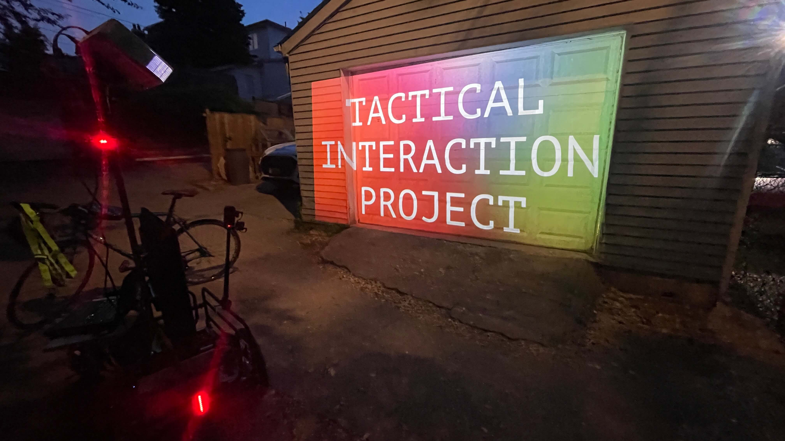

home
prototype updates:
- 0418: bike trailer and power system arrive
- 0429: initial 3D sketches for trailer design
- 0506: trained on mig welding at D&TL
- 0513: first frame welding session
- 0516: started coding the input form and message wall
- 0520: second frame welding session
- 0521: started working with raspberry pi
- 0528: projector parts 3D printed
- 0530: full system assembled
- 0603: first field test complete
- 0606: adapted message wall to include prompt to message doug ford
- 0612: started working on ontario place map with touchdesigner pops
- 0613: began using notebooklm to summarize my video journals & writing
- 0615: expanding list of influences to include more fem, queer, bipoc artists
- 0618-0626: in dawson city, yukon: writing about methodology (research-creation, learning in public, digital gardens, etc.), helping friends with their actual garden and chicken run, surviving wildfires
- 0625: filmed farm tour with fred & jake, examining diy culture in dawson
